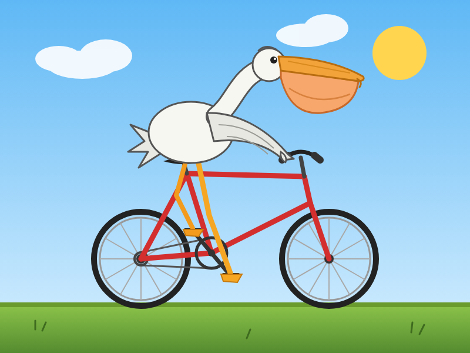
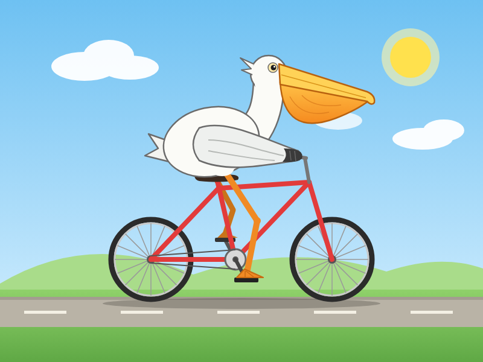
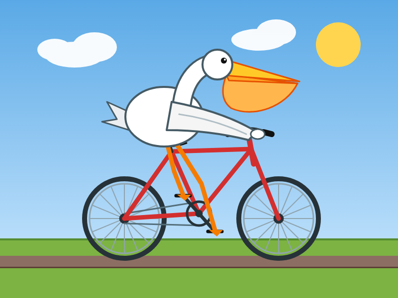
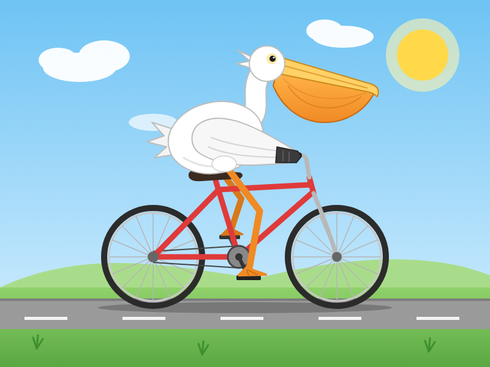

同じ指示文を、Fable 5.1 と Fable 5.2 に2回ずつ渡して、出来を比べた記録です。数字の一覧は results.html にあります。
ブラウザで遊べる横スクロールのアクションゲーム。カードを開くとそのまま遊べます。
操作: ←→ で移動、Space か Z でジャンプ
左が Fable 5.1、右が Fable 5.2。上段が1回目、下段が2回目です。画像をクリックすると PNG が開き、右下の「裏面」でSVGの元ファイルへのリンクが出ます。

5.1 / 1回目
5.2 / 1回目
5.1 / 2回目
5.2 / 2回目約185行のコードにバグ14個、テスト31本。4本とも、全部直してテストが全部通った。
修正前後のコードとテストは GitHub にあります。小さい課題は bugfix-small フォルダです。
各課題の採点・所要時間などの一覧です。